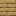
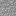
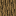

Construa com Create.
Por Simi Cats · Ver no YouTube ↗
Embarque no dirigível, conheça o modpack na descida e chegue até a comunidade no chão.
Começar a aventuraGratuito para jogar · Instalação guiada e comunidade no Discord
Gameplay de referência. Não é uma gravação do servidor.
Uma prévia do que faz parte da aventura.

Mecanismos e automação.
CONSTRUA
Novos biomas e paisagens.
EXPLORE
Cultivo e culinária.
CULTIVE
Mochilas para suas viagens.
ORGANIZESeleção provisória de mods. A lista final, versões e launcher serão confirmados pelo Enéas.
Três passos para preparar seu PC, instalar o pacote e encontrar a turma.
Pacote oficial, requisitos e convite do Discord serão liberados aqui após confirmação do Enéas.
Confira os requisitos e escolha o perfil gráfico adequado no launcher (todos usam os mesmos mods do servidor).
Perfis planejados: Mais leve (sem shaders, distância reduzida), Equilibrado (recomendado para jogar em grupo) e Visual (alcance maior). Importante: a memória RAM total do PC é diferente da RAM alocada ao Minecraft no launcher. Não instale versões aleatórias de Java ou drivers por conta própria.
Use o pacote oficial de importação no launcher indicado pela equipe.
Pacote, versão e checksum em confirmaçãoVeja as regras, libere seu acesso ao servidor e jogue em grupo.
Convite oficial em confirmaçãoSelecione o problema e veja como resolver.
Não cobramos pelo acesso ao servidor ou ao modpack. O acesso é gratuito e nenhuma vantagem no jogo depende de pagamento.
O canal de suporte no Discord e a identificação da pessoa ou equipe responsável pelo atendimento serão confirmados junto ao lançamento do pacote. Informe sempre o sistema do computador, a versão do modpack e a mensagem de erro.
Sim: traga ideias, ajude novos jogadores e participe das construções. O link oficial do APOIA.se para apoio financeiro voluntário será publicado assim que for confirmado pelo Enéas.
A viagem começa no céu e termina na casa com moinho d’água.